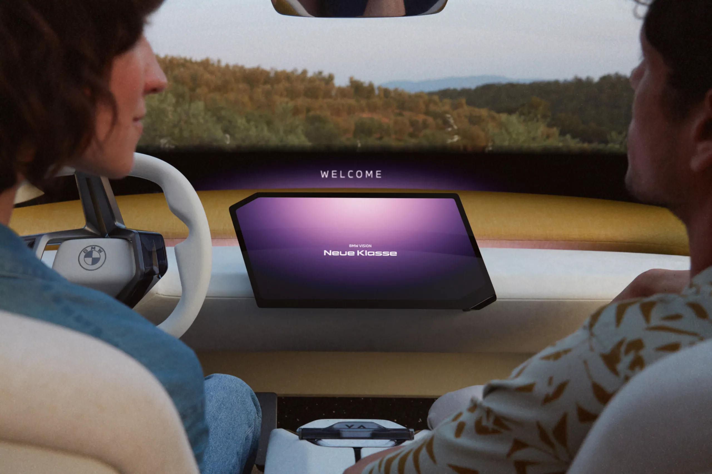
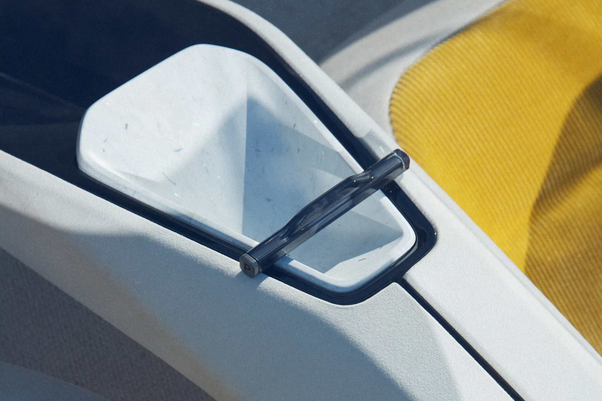
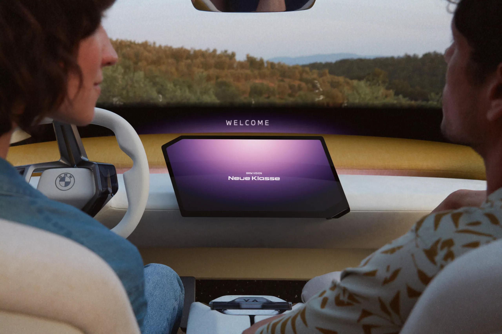
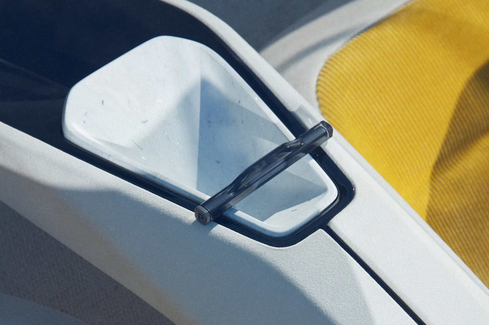
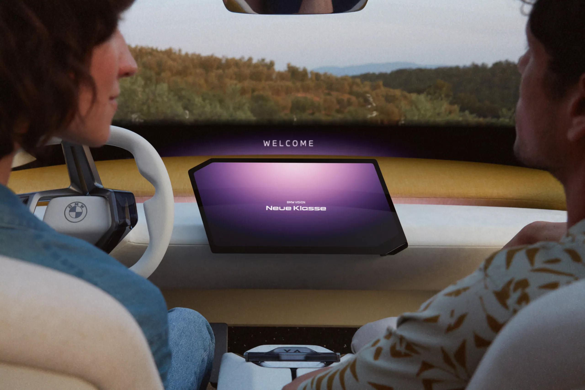
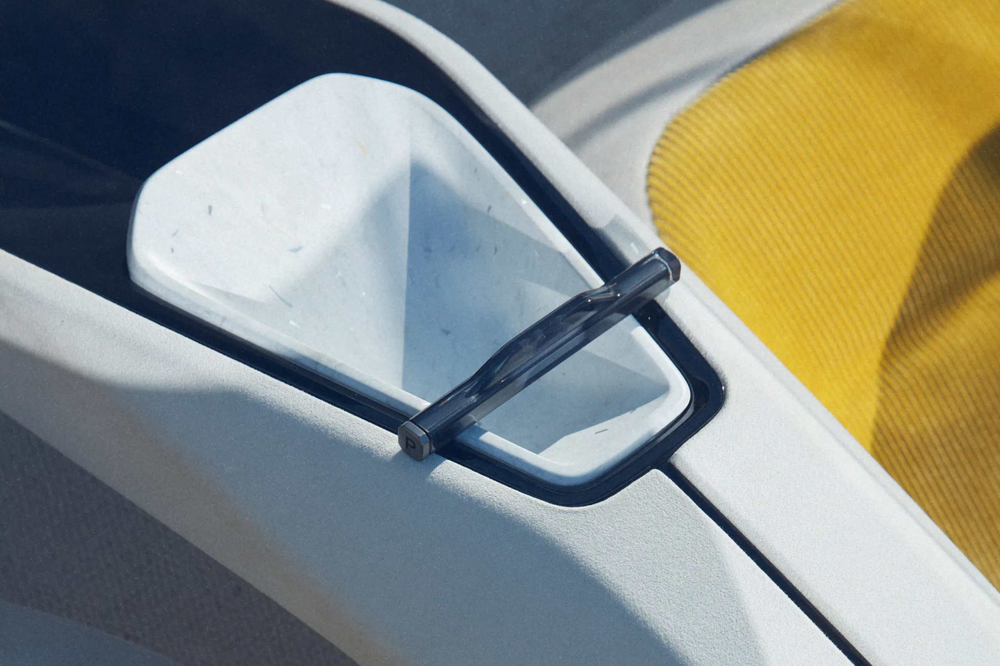
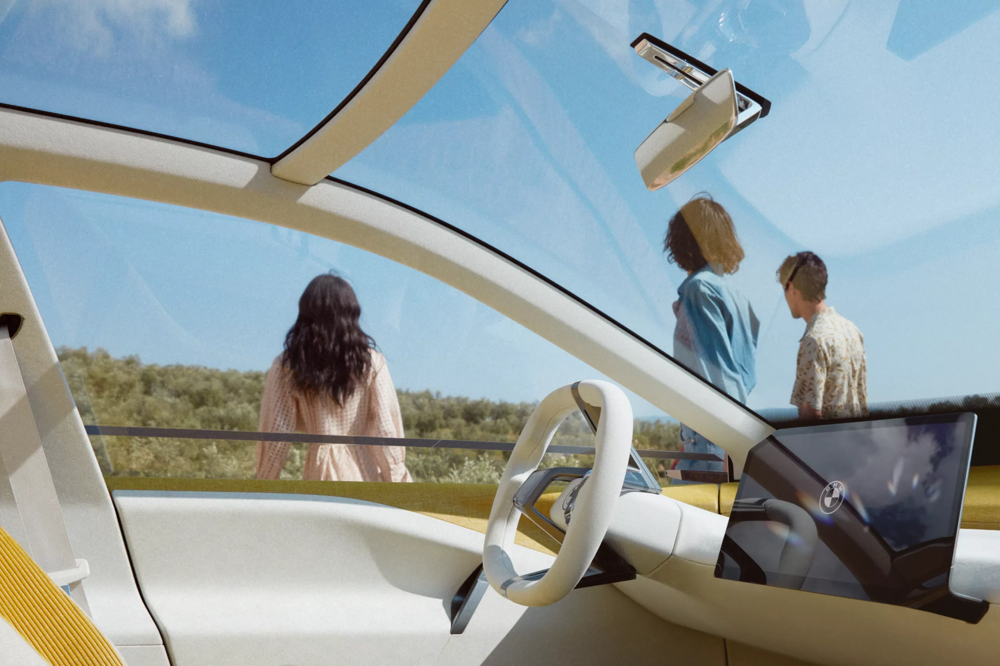
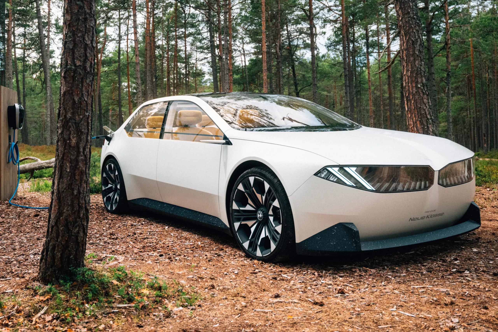
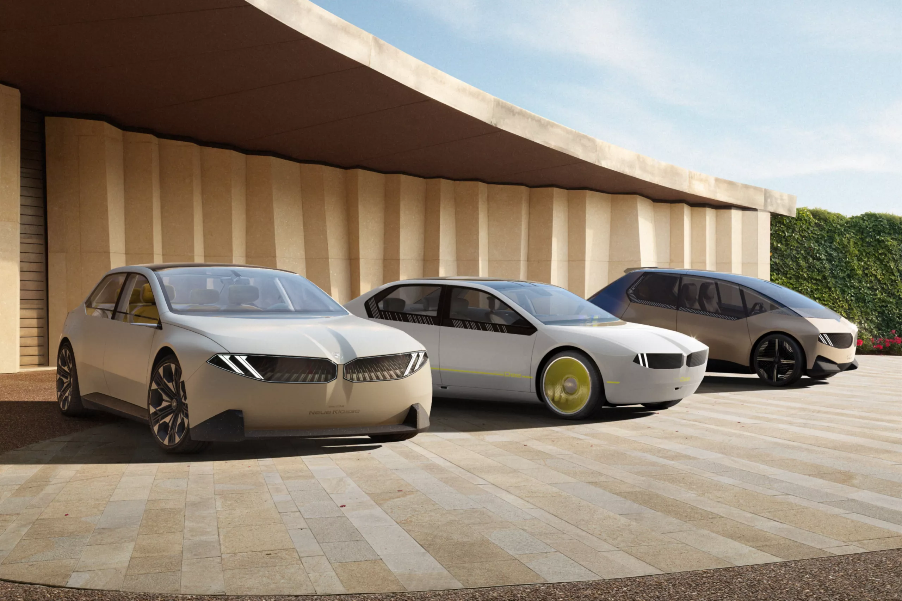
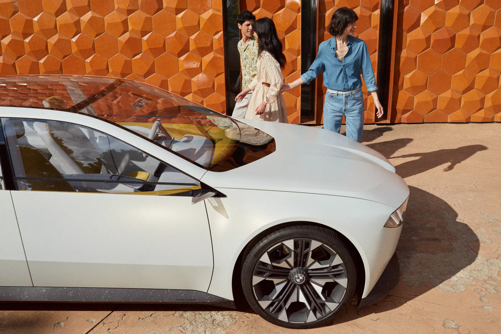

THE NEW
BMW VISION
NEUE KLASSE.
A NEW ERA OF MOBILITY.
GET TO KNOW THE BMW VISION NEUE KLASSE IN A VIDEO
THE HIGHLIGHTS OF THE BMW VISION NEUE KLASSE.
 





Electric driving pleasure. In a new dimension.
The sixth-generation BMW eDrive drive: up to 30 percent more range, 30 percent faster charging, 25 percent more efficiency.
The latest generation BMW iDrive: digital, interactive, intuitive.
In the interior, the next generation of BMW iDrive provides a unique digital user experience in which real and virtual worlds merge with one another – intuitively and innovatively as never before.
Circular in its conception – re:think, re:duce, re:use, re:cycle
The BMW Neue Klasse brings concepts of the circular economy into series production. From development, production, via the use phase, through to recycling.


BMW PANORAMIC VISION
BROADENS YOUR VIEW OF THINGS.
BMW Panoramic Vision, 3D Head-Up Display, Central and a multifunction steering wheel are part of the next generation BMW iDrive. It projects information across the entire breadth of the windscreen. Be it virtual virtual driving information, infotainment or navigation.
THE BMW NEUE KLASSE – STAY UP TO DATE.
The vision is just the beginning: Experience the leap into a new era with the BMW Neue Klasse – sign up and stay up to date.

DESIGN
DESIGN LEAPFROGS TO THE STAGE AFTER THE NEXT.
The BMW Vision Neue Klasse – a sporty sedan. Clear, elegant and timeless in its design. Large surfaces, distinctive lines, reduced to the essentials. With more room for characteristic features. A digital interactive surface, for example, comprising kidney grille and headlights as well as an interior flooded with light thanks to large window areas.

SUSTAINABILITY
JOY FOREVER TODAY AND IN THE FUTURE.
True driving pleasure starts today. And thinks of tomorrow. The BMW Neue Klasse reduces the CO2 footprint of its vehicles throughout the life cycle. Thanks to the resource-conserving production, the increased use of secondary raw materials and the highly efficient all-electric drive

ELECTRIC. DIGITAL. CIRCULAR.
The BMW Vision Neue Klasse is more than ahead of its time. It represents the leap into a new age. And combines the latest innovations to produce an unforgettable experience.